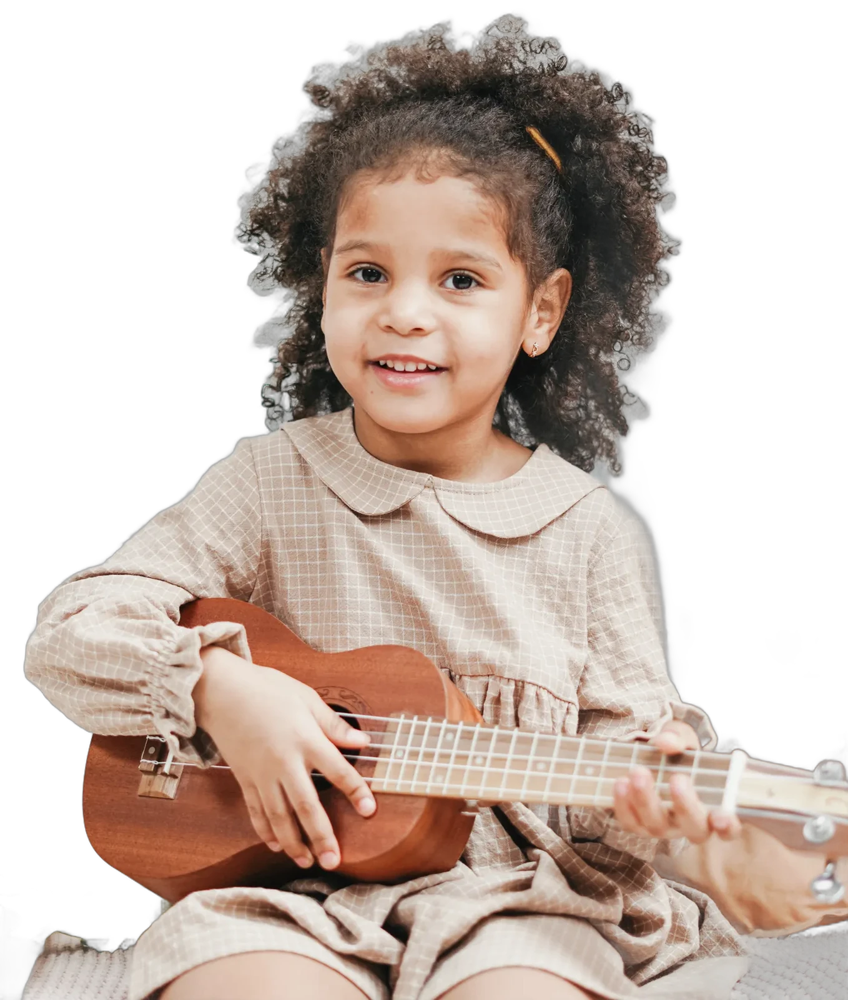
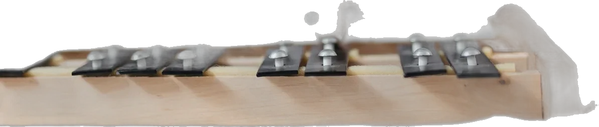
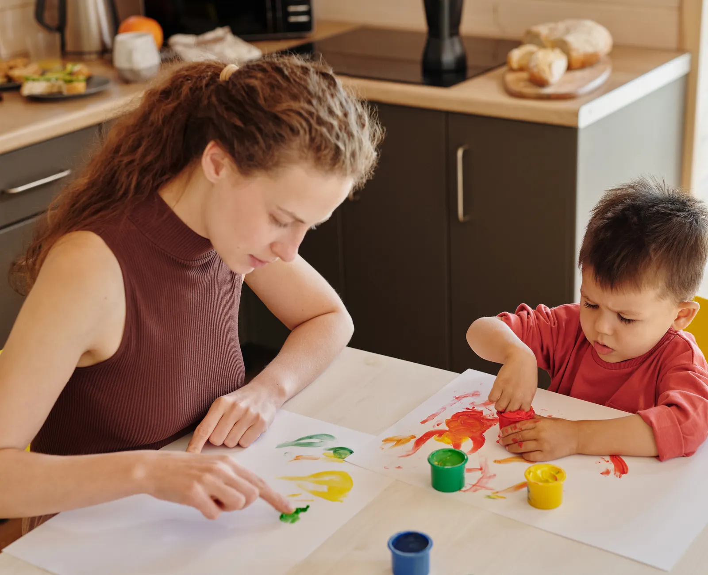
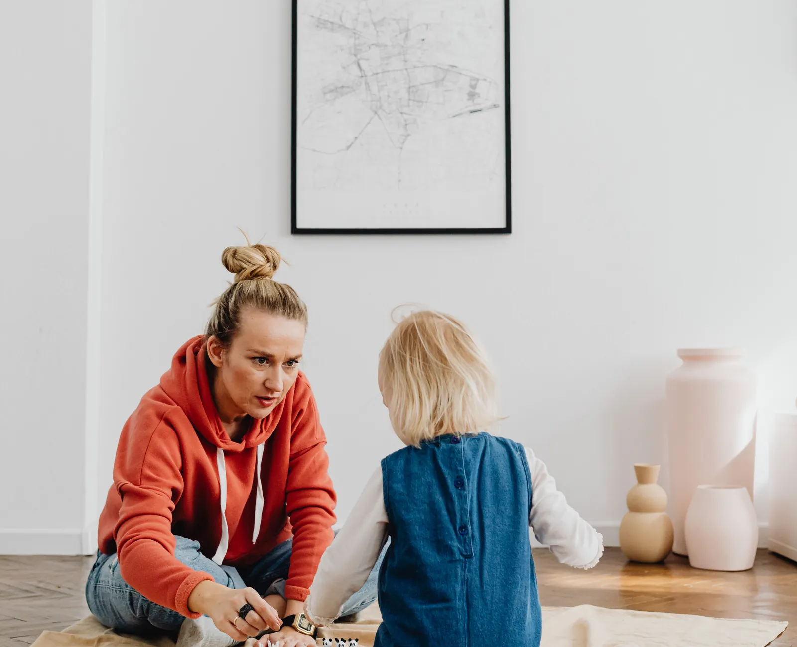

Preguntas por WhatsApp
Cada curso viene con un canal directo para dudas puntuales. No te quedás con la duda dando vueltas.
Estimulación temprana · 0 a 3 años · CABA y online
Cursos cortos y asesorías para madres y padres que están en el barro de los primeros tres años. Rituales de sueño que se sostienen, juegos de dos minutos y recursos de arteterapia para usar hoy, en tu casa, con lo que ya tenés.


Ritual de la noche
Luz baja · nana · cunaCada curso viene con un canal directo para dudas puntuales. No te quedás con la duda dando vueltas.
Los audios de nanas y transiciones quedan en tu teléfono, para usarlos sin abrir la plataforma.
Fichas de una carilla: el ritual, las frases que ayudan, los objetos seguros por edad.
Clases de 12 a 18 minutos. Podés verlas en tandas cortas, que es como se puede con un bebé.
Por dónde empezar
Noches que se hicieron largas, siestas que no llegan, un ritual que nunca termina de armarse.
Ver cursos 02Canciones con función: para el cambiador, para salir de casa, para bajar un desborde.
Ver cursos 03Qué proponerle en cada etapa, con objetos que ya tenés y ratos de dos minutos.
Ver cursos 04Berrinches, mordidas, llantos largos. Y el arte como forma de decir lo que todavía no se habla.
Ver cursosLos cursos
La primera clase de cada curso es abierta: podés verla antes de decidir.
El método
Cada acompañamiento sigue el mismo recorrido: empieza fuerte, se ordena y termina en calma. Scrolleá para escucharlo.
Miramos qué está pasando de verdad en tu casa: horarios, siestas, comidas, pantallas, quién sostiene qué.
Armamos un ritual corto y posible. No el ideal de un libro: el que entra en tus días reales.
Sumamos canciones y propuestas de arte como señales. El cuerpo entiende antes que la palabra.
Ajustamos semana a semana. Los cambios chicos, repetidos, son los únicos que quedan.
y la casa baja el volumen.

Arteterapia + estimulación
Un bebé no puede contarte que le cambió la rutina, que extraña o que está sobrecargado. Pero mancha, aprieta, rompe, elige un color y repite un gesto. En los cursos vas a encontrar propuestas de arte sensorial pensadas para casas reales: materiales caseros y seguros, diez minutos de preparación y un cierre que no termina en llanto.
Uno a uno
Las asesorías se coordinan por WhatsApp según disponibilidad. Son un espacio de orientación en crianza: no reemplazan los controles pediátricos ni una evaluación profesional del desarrollo.
Quién te acompaña
Lic. en Educación Especial · Arteterapeuta · Estimuladora temprana
Trabajo con familias con bebés y niñes de 0 a 3 años, en CABA y online. Mi formación cruza dos mundos que casi nunca se cruzan: la educación especial y el arteterapia. De ahí sale la manera en que acompaño: recursos concretos, canciones que funcionan como señales y propuestas de arte que se pueden hacer en una cocina, sin comprar nada.
No trabajo con métodos de llanto ni con recetas que sirven para todas las casas. Trabajo con la tuya.
@lorenadellujan
Cómo se cursa
Cada clase dura entre 12 y 18 minutos y se puede ver de a ratos, que es como se puede con un bebé. Los audios de las canciones se descargan al teléfono y las guías se imprimen en una carilla. Cuando te inscribís, te mando el acceso por WhatsApp y quedás con el material sin vencimiento.
Antes de empezar
Sí. Todo el material está organizado por tramos de edad, desde recién nacido hasta los tres años. En cada clase se aclara a qué etapa corresponde la propuesta, así no aplicás algo que todavía no toca.
No. Las canciones están grabadas para que las escuches y las repitas, y la percusión se arma con frascos, tapas y cucharas. Afinar no importa: a tu bebé le importa tu voz y el ritmo.
No, y es importante decirlo con claridad: son cursos y asesorías educativas de crianza. No diagnostican, no tratan y no reemplazan los controles de salud ni la evaluación de un profesional. Si notás algo que te preocupa en el desarrollo de tu hije, consultá con tu pediatra.
No. El trabajo con el sueño es respetuoso: rituales, señales sensoriales, canciones y ajustes de ambiente. Ninguna propuesta implica dejar llorar a tu bebé sola.
En esta versión de demostración elegís tus cursos y el sitio arma el mensaje para coordinar la inscripción por WhatsApp. El pago online y la creación automática de la cuenta se activan al pasar la plataforma a producción.
Al completar un curso queda disponible un certificado de finalización propio, que sirve como constancia de participación. No es una certificación oficial ni una habilitación profesional.
Escribime y te digo con qué curso o asesoría te conviene empezar. Si no es conmigo, te oriento igual.